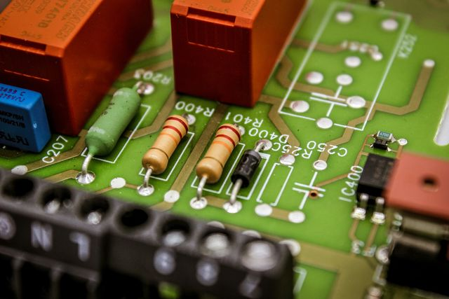

Alta potencia
ALTA POTENCIA
Capacidades técnicas

Cada amplificador ha sido seleccionado por su rendimiento en entornos de prueba críticos, incluyendo cámaras de vacío térmico, bancos de ensayo multipactor y sistemas de validación de conectores y materiales RF. La tabla siguiente presenta las especificaciones clave de nuestros modelos disponibles, facilitando la elección del equipo más adecuado según la aplicación técnica y el rango de operación requerido.
Amplificadores
Nuestros Amplificadores
Contamos con una amplia gama de amplificadores de radiofrecuencia diseñados para cubrir desde bandas bajas hasta frecuencias milimétricas, con potencias que alcanzan varios kilovatios. Nuestra selección incluye modelos de fabricantes líderes como ENI, LogiMetrics, Amplifier Research, BONN Elektronik, ETM, CPI y TMD, entre otros. Estos equipos ofrecen configuraciones adaptadas a distintas interfaces, rangos de frecuencia y tipos de alimentación, garantizando compatibilidad con los requisitos más exigentes de ensayo.Cada amplificador ha sido seleccionado por su rendimiento en entornos de prueba críticos, incluyendo cámaras de vacío térmico, bancos de ensayo multipactor y sistemas de validación de conectores y materiales RF. La tabla siguiente presenta las especificaciones clave de nuestros modelos disponibles, facilitando la elección del equipo más adecuado según la aplicación técnica y el rango de operación requerido.
1
Tabla de amplificadores y características disponibles en nuestro laboratorio
| BRAND | FREC MIN (GHz) | FREC MAX (GHz) | INTERFACE | OUTPUT POWER (W) | POWER TYPE | MODEL |
|---|---|---|---|---|---|---|
| ENI | 0 | 0,4 | 100 | CW | 5100L | |
| LogiMetrics | 2,8 | 4,8 | 200 | CW | A610/SC | |
| LogiMetrics | 4,8 | 8 | 200 | CW | A610/C | |
| LogiMetrics | 8 | 18 | 200 | CW | A610/IJ | |
| TMD | 7,5 | 18 | 335 | CW | PTC 6346 | |
| ENI | 0 | 0,25 | 15 | CW | 420L | |
| Amplifier Research | 0 | 0,22 | 1000 | CW | 1000L | |
| Amplifier Research | 0 | 0,22 | 2500 | CW | 2500L | |
| KALMUS | 0,08 | 1 | 500 | CW | 7000LC | |
| Amplifier Research | 0,8 | 4,2 | 25 | CW | 25S1G4A | |
| ETM | 18 | 26,5 | 40 | CW | 40K MM | |
| ETM | 26,5 | 40 | 40 | CW | 40Ka MM | |
| CPI | 4 | 8 | 20 | CW | VZC-6961K4 | |
| Amplifier Research | 1 | 2,5 | 1000 | CW | 1000T1G2BM3 | |
| ENI | 0 | 0,012 | 100 | CW | 2100L | |
| BONN Elektronik | 0,1 | 0,5 | 5000 | CW | BLWA 1010-5000 | |
| BONN Elektronik | 0,5 | 1 | 2500 | CW | BLWA 5010-2500 | |
| Amplifier Research | 7,5 | 18 | 1000 | CW | 1000T8G18BM3 | |
| Amplifier Research | 2,5 | 7,5 | 1000 | CW | 1000T2G8BM6 | |
| ENI | 0 | 0.4 | 100 | CW | 5100L | |
| AR | 18 | 26,5 | 150 | CW | 130T18G26Z5M6 | |
| AR | 26,5 | 40 | 150 | CW | 110T26Z5G40 | |
| BONN Elektronik | 0 | 0,4 | 150 | CW | BSA 0140-150 | |
| PRANA | 0 | 0,4 | 60 | CW | DR60 | |
| BONN Elektronik | 0,08 | 1 | 1500/1200 | CW | BVWA 0810-1500/1200 | |
| BONN Elektronic | 1 | 6 | 50 | CW | BLMA 1060-50 | |
| BONN Elektronic | 6 | 18 | 35 | CW | BLMA 6018-35 | |
| LogiMetrics | 1 | 2 | 20 | CW | A330/L | |
| LogiMetrics | 2 | 4 | 20 | CW | A330/S | |
| LogiMetrics | 8 | 12,4 | 200 | CW | A600/X | |
| LogiMetrics | 8 | 12,4 | 200 | CW | A600/X | |
| TMD | 7.5 | 18 | 335 | CW | PTC 6346 | |
| ETM | 2,5 | 8 | 400 | CW | 400SC-X | |
| ETM | 2,5 | 8 | 400 | CW | 400SC-X | |
| BONN Elektronic | 8 | 12,4 | 4000 | CW | TWAP 0812-4000 | |
| BONN Elektronic | 8 | 12,4 | 4000 | CW | TWAP 0812-4000 | |
| BONN Elektronic | 1 | 2,5 | 500 | CW | TWAL0103-500E | |
| BONN Elektronic | 1 | 2,5 | 500 | CW | TWAL0103-500E | |
| ACORDE-ETM | 18 | 26,5 | 150 | CW | 150K | |
| ACORDE-ETM | 26,5 | 40 | 150 | CW | 150Ka | |
| BONN Elektronik | 1 | 2 | 240 | CW | BLMA 1020-240 | |
| BONN Elektronik | 37,5 | 43 | WR22 | 50 | CW | BLMA 3743-50 |
| PRANA | 0,08 | 1 | N | 100 | CW | |
| PRANA | 0 | 0,25 | N | 340 | CW | |
| BONN Elektronik | 0 | 0,225 | 3000 | CW | BSA 0122-3000 | |
| CPI | 8 | 18 | 20 | CW | VZM-6991K4 | |
| IFI | 0,2 | 1 | 400 | CW | M5404 | |
| LogiMetrics | 1 | 2,8 | 200 | CW | A610LS |
Cámaras

2
| Characteristic | MULCOPOWER TVAC | TVC-1 | TVC-2 |
|---|---|---|---|
| Useful Capacity | Ø 1000mm | Ø 1300mm | Ø 800mm |
| L 500 | L 1500 | L 1000 | |
| Temperature Range | -70°C to | -150°C to | -150°C to |
| +90°C | +150°C | +150°C | |
| Vacuum | Better than | Better than | Better than |
| 5x10-6 mbar | 1x10-6 mbar | 5x10-6 mbar |

Área limpia
3